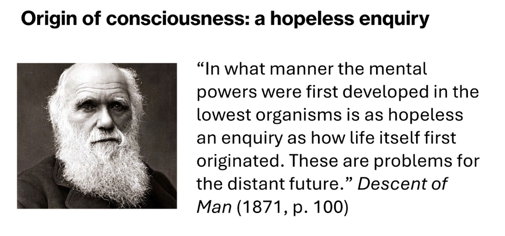
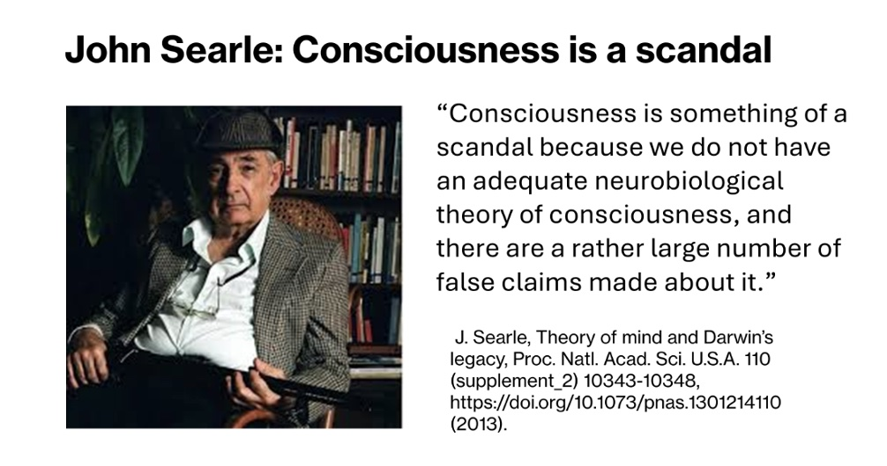

Reflections from the Toward a Science of Consciousness conference.
In 1996 I went to Tucson, Arizona, for the third annual Toward a Science of Consciousness conference. I presented a paper (The City of Nine Gates) in a poster session. You pin your poster on one of many display panels. At a designated time, usually one evening, you stand by your poster to speak to people who stop to have a look. I thought the conference was a great opportunity to show the relevance of the Vedic worldview to an important field of science—consciousness.
An individual poster, however, is the lowest level of participation as a speaker at a science conference. For the next couple of decades, I continued to come to the conference alone, sometimes just to keep up with developments and sometimes to make a poster presentation.
I would think, if with my lack of credentials I can do this much, just imagine what a devotee with proper credentials could accomplish here. I knew such devotees existed. I met them as I traveled around the world, speaking at universities and conferences. Starting just a few years ago, a constellation of such devotees came together to do something in the field of consciousness studies.
This year The Science of Consciousness conference was held in Barcelona, Spain. I was there but not alone. Several other devotee scientists and scholars were there, participating at a very high level. A group of them gave a four-hour workshop, explaining the contribution that Indian Knowledge Systems can make to consciousness studies. One of the group gave a plenary talk, attended by everyone. Two others gave a talk In one of the concurrent sessions, during which people choose one of several sessions running at the same time. I also gave a talk (Darwin and Consciousness) in a concurrent session.
Darwin believed that consciousness with its mental powers was produced by the brain, but he could not demonstrate how.
The distant future has come and the origin of consciousness is still a problem.
On the last day of the conference, a Spanish scientist (Frederico Faggin) said that theories of consciousness are like toothbrushes. Everyone has one and won’t use anyone elses. That sums up the current state of consciousness studies. There are many theories, none of which have become dominant. That means the field is wide open for a Vedic alternative.
Drutakarma Dasa
Michael Cremo
https://www.mcremo.com/news.htm